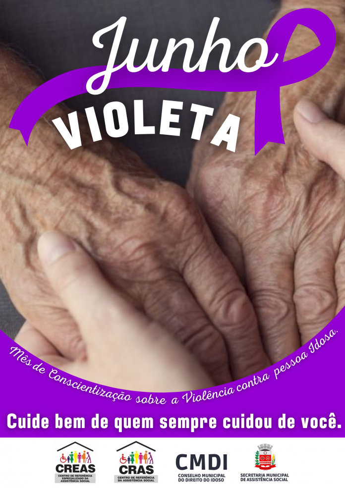
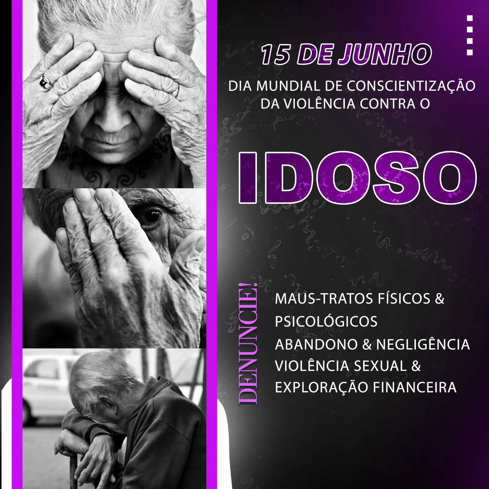

O que é essa data?
O dia mundial da conscientização da violência contra a pessoa idosa é celebrado em 15 de junho e foi criado com o objetivo de alertar a sociedade sobre os diferentes tipos de violência sofridos pelos idosos. A data surgiu como uma forma de chamar a atenção da população para um problema que afeta milhões de pessoas em todo o mundo, muitas vezes de maneira silenciosa e invisível. Além disso, a campanha busca promover o respeito, a proteção e a garantia dos direitos da pessoa idosa, incentivando atitudes de cuidado, inclusão social e valorização da dignidade humana em todos os ambientes da sociedade.
A violência contra idosos pode acontecer de várias formas, como agressões físicas, violência psicológica, abandono, negligência e exploração financeira. Em muitos casos, os maus-tratos acontecem dentro do próprio ambiente familiar, praticados por pessoas próximas da vítima, o que torna a situação ainda mais delicada. Além dos danos físicos, a violência também pode causar consequências emocionais graves, como tristeza, medo, ansiedade, depressão e isolamento social. Muitas vítimas acabam sofrendo em silêncio por medo, dependência emocional ou financeira, dificultando a denúncia e o combate a esse problema.
Por isso, essa campanha é extremamente importante para conscientizar a população sobre a necessidade de cuidar, respeitar e proteger aqueles que contribuíram com sua experiência, trabalho e história para a sociedade. Além de incentivar o combate aos maus-tratos, a data também reforça a importância da empatia, do carinho e da inclusão social dos idosos no ambiente familiar e na comunidade. Muitas pessoas idosas sofrem em silêncio com situações de abandono, humilhação e violência, o que torna ainda mais necessária a participação da sociedade na identificação e denúncia desses casos. Valorizar a pessoa idosa significa reconhecer sua importância, garantir seus direitos e promover uma vida mais digna, segura e respeitosa para todos.

Tipos de violência
Violência física
A violência física acontece quando a pessoa idosa sofre agressões que causam dor, ferimentos ou qualquer tipo de sofrimento físico. Isso pode incluir empurrões, tapas, queimaduras, machucados e até o uso excessivo de força durante cuidados diários. Muitas vezes, esse tipo de violência acontece dentro do próprio ambiente familiar e pode deixar marcas físicas e emocionais profundas na vítima.
Violência psicológica
A violência psicológica ocorre por meio de humilhações, ameaças, insultos, gritos ou atitudes que diminuem e intimidam a pessoa idosa. Esse tipo de violência pode causar tristeza, medo, ansiedade, baixa autoestima e isolamento social. Em muitos casos, o idoso passa a se sentir sem valor ou dependente emocionalmente das pessoas ao seu redor.
Exploração financeira
A exploração financeira acontece quando alguém utiliza o dinheiro, aposentadoria, cartões bancários ou bens do idoso sem sua autorização. Muitas vezes, familiares ou pessoas próximas aproveitam da confiança ou da vulnerabilidade da vítima para obter vantagens financeiras. Esse tipo de abuso pode comprometer a qualidade de vida e a independência da pessoa idosa.
Negligência
A negligência acontece quando os cuidados básicos necessários para a saúde e o bem-estar do idoso são ignorados. Isso inclui falta de alimentação adequada, higiene, medicamentos, assistência médica e atenção diária. A ausência desses cuidados pode causar sérios problemas físicos e emocionais, além de colocar a vida da pessoa idosa em risco.
Abandono
O abandono ocorre quando a pessoa idosa é deixada sozinha, sem apoio, assistência ou acompanhamento necessário para sua segurança e qualidade de vida. Muitas vezes, o idoso acaba sofrendo com solidão, tristeza e dificuldades para realizar atividades básicas do dia a dia. O abandono é uma forma grave de violência e representa a falta de responsabilidade e cuidado com a pessoa idosa.
Abuso sexual
O abuso sexual acontece quando a pessoa idosa é obrigada, pressionada ou exposta a qualquer tipo de ato sexual sem seu consentimento. Esse tipo de violência pode incluir assédio, abuso, toques inadequados ou situações que causem constrangimento e sofrimento físico e emocional. Além dos danos à saúde, a violência sexual pode gerar medo, vergonha, trauma e isolamento, afetando profundamente a dignidade e o bem-estar da pessoa idosa.
